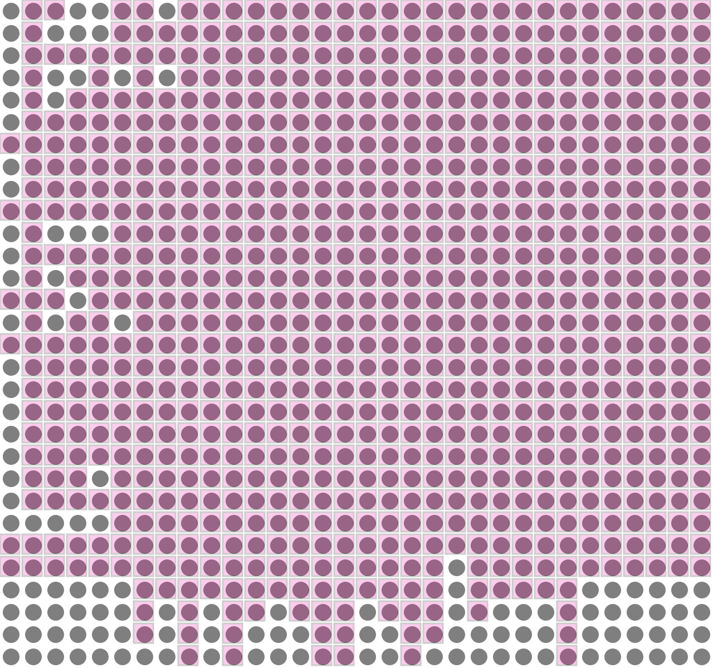
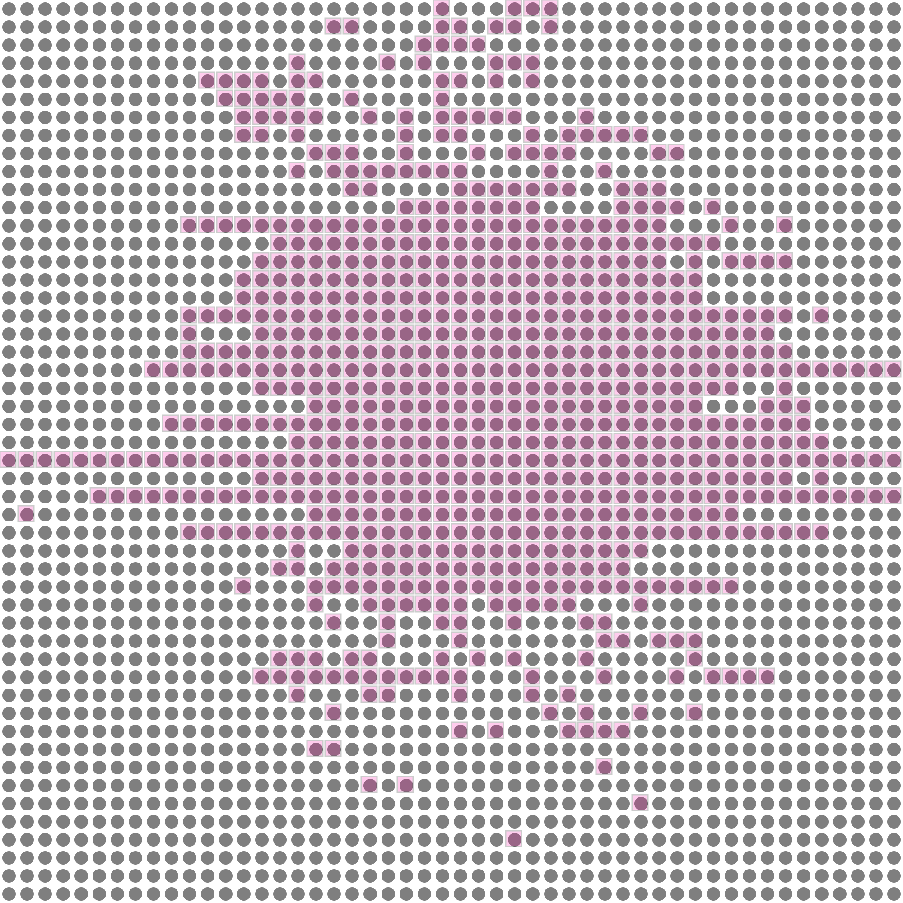

2026
graph LR
A[Netlist] --> B[Global Placement]
B --> C[Physical Layout]
C --> D[Routing]
D --> E[FPGA Bitstream]
style A fill:#e1f5fe
style B fill:#fff3e0
style C fill:#e8f5e9
style D fill:#fce4ec
style E fill:#f3e5f5| Metric | Traditional | Fairness-Centric |
|---|---|---|
| Objective | Minimize total wirelength | Minimize worst wire length |
| Focus | Average case | Worst case |
| Effect | Some nets very long | No excessively long nets |
| Routability | May fail | ✅ Guaranteed |
“Fairness ensures no single connection is excessively long” ⚖️
For a connection between modules u and v:
cost(u, v) = Δx ⋅ |xu − xv|+Δy ⋅ |yu − yv|
graph LR
subgraph Grid
u[module u] --> |Δx| x[ ]
x --> v[module v]
end
style u fill:#2196F3
style v fill:#4CAF50Find placement P that minimizes:
minPmax(u, v) ∈ Ecost(u, v)
Subject to: * No module overlap ⚠️ * Grid boundary constraints 🚧 * I/O pads on periphery 📍 * Reserved columns for DSP/SRAM ⚡
classDiagram
class Netlist {
+modules: List
+nets: List
+num_pads: int
}
class FlowGraph {
+nodes
+edges with costs
}
class Placement {
+place[0]: x-coords
+place[1]: y-coords
}
class NnsConfig {
+grid: [W, H]
+delta: [dx, dy]
}
Netlist --> FlowGraph : create
FlowGraph --> Placement : optimize
NnsConfig --> FlowGraph : configgrid
rows: 6
cols: 6
I/O pad cells: 4
core cells: 4x4╔══════════════════════════════════════╗
║ I/O Pad Row (edge) ║
║ ┌──┬──┬──┬──┬──┬──┐ ║
║ │P │P │P │P │P │P │ ║
║ ├──┼──┼──┼──┼──┼──┤ ║
║ │P │ │ │ │ │P │ Core ║
║ │ │ │ │ │ │ │ Grid ║
║ │P │ │ │ │ │P │ ║
║ ├──┼──┼──┼──┼──┼──┤ ║
║ │P │P │P │P │P │P │ ║
║ └──┴──┴──┴──┴──┴──┘ ║
╚══════════════════════════════════════╝for net in netlist.nets:
for v1 in netlist.ugraph[net]:
for v2 in netlist.ugraph[net]:
if not is_pad(v2):
ugraph.add_edge(v1, v2) # Bidirectional
ugraph.add_edge(v2, v1)flowchart TD
A[Start] --> B[Initialize ratio]
B --> C[Calc edge weights]
C --> D[Find negative cycles]
D --> E{Negative cycle?}
E -->|Yes| F[Update ratio]
F --> C
E -->|No| G[Converged]
style A fill:#e1f5fe
style G fill:#c8e6c9For a given ratio β, edge weight:
wβ(u, v) = β − cost(u, v)
Constraint: xv − xu ≤ wβ(u, v) for all edges
Optimal ratio: Smallest β where solution exists
def calc_weight(beta, edge):
u, v = edge
temp = beta - ugraph[u][v]["cost"]
return temp.numerator // temp.denominatordef zero_cancel(cycle):
total_cost = sum(ugraph[u][v]["cost"] for (u,v) in cycle)
return Fraction(total_cost, len(cycle))New ratio: $$ \beta_{new} = \frac{\sum \text{cost}}{\# \text{edges}} $$
grid
rows: 4
cols: 3
overlap: trueBefore: Modules may overlap After: Each site has ≤1 module
graph LR
subgraph Modules
M1[M1]
M2[M2]
M3[M3]
end
subgraph Positions
P1[(1,1)]
P2[(1,2)]
P3[(1,3)]
end
M1 --> P1
M1 --> P2
M2 --> P2
M2 --> P3
M3 --> P3
style M1 fill:#2196F3
style M2 fill:#4CAF50
style M3 fill:#FF9800# Construct bipartite graph
B.add_nodes_from(lst, bipartite=0)
for v in lst:
for i in range(-neighborhood, neighborhood):
# Add edges to nearby positions
weight = calc_worst_wirelength_v(v, new_pos)
B.add_edge(v, new_pos, weight=weight)
# Solve
matches = bipartite.minimum_weight_full_matching(B)flowchart TD
A[For each I/O pad] --> B[Find nearest edge]
B --> C{Calculate worst distance}
C --> D{Any edge full?}
D -->|No| E[Assign to best edge]
D -->|Yes| F[Try other edge]
F --> E
E --> G[Legalize if needed]
style A fill:#e1f5fe
style G fill:#c8e6c9For each I/O pad, choose edge that minimizes:
worst = maxm ∈ connectedcost(pad, m)
Available edges: Top, Bottom, Left, Right
flowchart TD
A[Start] --> B[Initial Random Placement]
B --> C[Iteration]
C --> D[Howard X]
D --> E[Legalize Y]
E --> F[Assign I/O]
F --> G[Howard Y]
G --> H[Legalize X]
H --> I[Assign I/O]
I --> J[Calc Worst Wire]
J --> K{Improved?}
K -->|Yes| L[Save Best]
L --> C
K -->|No| M[Restore Best]
M --> N[End]
style B fill:#fff3e0
style N fill:#c8e6c9| Phase | Worst Wire |
|---|---|
| Initial | 150 |
| Howard X | 95 |
| Legalize Y | 85 |
| Howard Y | 72 |
| Legalize X | 68 |
| Final | 65 |
Monotonically decreasing ✅
| Metric | Value |
|---|---|
| Initial WW | 150 |
| Final WW | 65 |
| Improvement | 57% |
| Runtime | ~2s |
| Method | Worst Wire | HPWL |
|---|---|---|
| Random | 150 | 1250 |
| Ours | 65 | 890 |
| SA | 72 | 850 |
Fairness-centric achieves best worst case 🎯
Initial: Random placement

After legalization

Final: Optimized
| Algorithm | Purpose |
|---|---|
| Howard’s | Optimization along axis |
| Parametric search | Find minimum ratio |
| Bipartite matching | Legalization |
| Negative cycle detection | Ratio update |
📧 Contact: [email]
🔗 Code: https://github.com/luk036/nnsplace